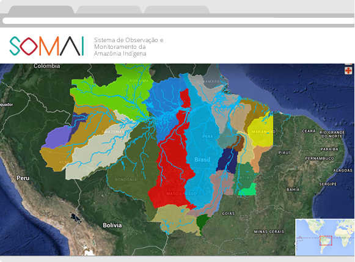
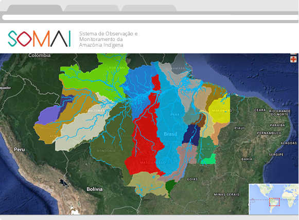

Localização:{{ti.uf}}
Situação legal:{{ti.situacao_legal}}
Área:{{ti.area}} m²
População:{{ti.populacao}}
Informação científica para ajudar os povos indígenas na adaptação aos impactos da mudança do clima.

Plataforma online com dados científicos sobre as Terras Indígenas da Amazônia brasileira, que busca mostrar a importância destes territórios para ações de mitigação das mudanças climáticas e manutenção do equilíbrio ambiental regional.

O SOMAI foi desenvolvido para o empoderamento indígena nas questões climáticas, levando-se em conta os impactos climáticos sobre suas terras. É uma ferramenta para povos indígenas, gestores e instituições que trabalham com o tema.

A ferramenta permite a produção instantânea de mapas e relatórios que são rica fonte de informação sobre as Terras Indígenas. O SOMAI possui também uma calculadora de ameaças para combinar dados e calcular quais as terras mais vulneráveis.
O objetivo do Sistema de Observação e Monitoramento da Amazônia Indígena - SOMAI é fornecer informações que facilitem o desenvolvimento de planos indígenas de mitigação e adaptação às mudanças climáticas para as Terras Indígenas da Amazônia brasileira.
Com o uso de software livre, a plataforma contém dados científicos tanto das alterações climáticas que já ocorreram, como de possíveis cenários futuros. Os dados reunidos mostram informações sobre: desmatamento, uso do solo, vegetação, hidrografia, infraestrutura, estoque de carbono, além das previsões futuras de variação de temperatura, de chuva e da biodiversidade.
Os dados serão atualizados de acordo com a disponibilização de novas informações e, no futuro, pretende-se inserir dados coletados pelos próprios indígenas, aumentando a interatividade da plataforma.
O SOMAI utiliza fontes oficiais para seus dados, além de buscar sempre as fontes mais atualizadas para as informações apresentadas.
| Dado | Fonte |
|---|---|
| Terras indígenas | Instituto Socioambiental (ISA), 2015 |
| Sub-bacias | ANA (Agência Nacional de Águas) |
| Uso do solo | Projeto TerraClass - INPE (Instituto Nacional de Pesquisas Espaciais) |
| Rodovias | DNIT (Departamento Nacional de Infraestrutura de Transportes) |
| Unidades de conservação | ICMBio (Instituto Chico Mendes - MMA) |
| Biomas | MMA (Ministério do Meio Ambiente) |
| Hidrelétricas | ANEEL (Agência Nacional de Energia Elétrica) |
| Reservatórios | ANEEL (Agência Nacional de Energia Elétrica) |
| Linhas de transmissão | ANEEL (Agência Nacional de Energia Elétrica) |
| Portos | DNIT (Departamento Nacional de Infraestrutura de Transporte) |
| Polos madeireiros | Imazon - Instituto do Homem e Meio Ambiente da Amazônia |
| Tipos de vegetação | IBGE (Instituto Brasileiro de Geografia e Estatística) |
| Linhas de transformação | ANEEL (Agência Nacional de Energia Elétrica) |
| Mineração | DNPM (Departamento Nacional de Produção Mineral) |
| Desmatamento | INPE/PRODES (Instituto Nacional de Pesquisas Espaciais) |
| Chuva | TRMM (Tropical Rainfall Measuring Mission) |
| Temperatura | MODIS, imagens MOD09Q1 |
| Frequência de seca | SPEI Global Drought Monitor |
| Anomalias de seca | TRMM (Tropical Rainfall Measuring Mission) |
| Estoque de carbono | Baccini A, Goetz SJ, Walker WS, et al., 2012. Estimated carbon dioxide emissions from tropical deforestation improved by carbon-density maps. Nature Climate Change, 2(3):182–185. |
| Focos de calor | INPE (Instituto Nacional de Pesquisas Espaciais) |
Ao selecionar o nome de uma Terra Indígena, o SOMAI dá destaque à essa Terra. Além do zoom, é possível gerar relatórios individuais para a Terra selecionada com informações individualizadas tais como: presença de conflitos e percepção das mudanças ambientais pelos indígenas. O objetivo é que seja disponibilizado nos relatórios dados coletados pelos indígenas que vivem naquela Terra.
O SOMAI possui um relatório específico para cada Terra Indígena Amazônica. No relatório é possível encontrar dados gerais como a localização, área e população; e dados climáticos com foco naquela Terra Indígena. Há também gráficos para o melhor entendimento de como está a situação de cada Terra Indígena Amazônica.
Localização:{{ti.uf}}
Situação legal:{{ti.situacao_legal}}
Área:{{ti.area}} m²
População:{{ti.populacao}}
Os mapas apresentados nesta parte trazem diferentes tipos de dados históricos de cada um até o momento atual. Esses dados contêm informações sobre o clima - temperatura, chuva e índices de seca -, dados de estoque de carbono, registros de desmatamento e distribuição das espécies ameaças.
Em Mapas de apoio, é possível realizar a combinação de dados geográficos territoriais, uso do solo e infraestrutura com outros mapas disponíveis no SOMAI, como desmatamento, por exemplo para evidenciar como certas atividades impactam diretamente as Terras Indígenas.
As informações encontradas foram geradas com base nos modelos climáticos do 5º Relatório de Avaliação do IPCC para 2050. Foi utilizada a média de 17 modelos climáticos diferentes para construir esses mapas que trazem informações das tendências de mudança nos padrões de chuva, temperatura e distribuição de biodiversidade. Ainda que esses modelos sejam amplamente aceitos no meio científico, há uma incerteza associada a cada um desses modelos, por isso foi incluído um mapa adicional a cada mapa de Ameaças Climáticas, sobre incerteza dos modelos.
As Ameaças antrópicas são, basicamente, as mudanças do uso do solo e da paisagem provocadas pela ação humana. As mudanças não aconteceram de maneira igual ao longo da Amazônia brasileira, por isso as alterações ambientais e obras de infraestrutura impactam com uma intensidade diferente cada Terra Indígena.
 
Essa aba utiliza uma combinação dos dados disponíveis em Ameaças climáticas e Ameaças antrópicas para calcular quais Terras Indígenas estão mais ameaçadas, de acordo com os itens selecionados. As Terras Indígenas são classificadas de acordo com a intensidade do impacto sofrido pelas ameaças climáticas ou antrópicas. De maneira interativa e dinâmica pode-se separar os territórios muito impactados daqueles menos impactados por cada ameaça.